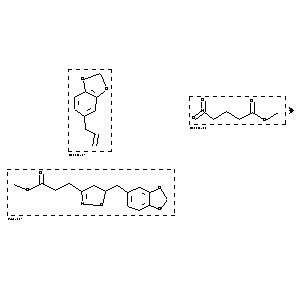

|  |
| FA | RX(1); FLST(1); RX(1) |
Reaction (1 of 1)
| Reaction ID | 1767841 |
| Reactant BRN | 136380; 1766154 |
| Reactant | 5-allyl-benzo[1,3]dioxole; 4-nitro-butyric acid methyl ester |
| Product BRN | 3627224 |
| Product | 3-(5-benzo[1,3]dioxol-5-ylmethyl-4,5-dihydro-isoxazol-3-yl)-propionic acid methyl ester |
| No. of Reaction Details | 1 |
Reaction Details (1 of 1)
| Reaction Classification | Preparation |
| Reagent | phenyl isocyanate, Et3N |
| Solvent | benzene |
| Other Conditions | 1) room temperature, 2) 2 h, reflux |
| Citation Pointer | 5513553; Journal; Baraldi, P. G.; Chiarini, A.; Leoni, A.; Manfredini, S.; Simoni, D.; Zanirato, V.; JHTCAD; J.Heterocycl.Chem.; EN; 27; 3; 1990; 557-561; |
Reference (1 of 1)
| Citation Number | 5513553 |
| Document Type | Journal |
| Authors | Baraldi, P. G.; Chiarini, A.; Leoni, A.; Manfredini, S.; Simoni, D.; Zanirato, V. |
| CODEN | JHTCAD |
| Journal Title | J.Heterocycl.Chem. |
| Language Code | EN |
| (Series) Volume | 27 |
| Number | 3 |
| Publication Year | 1990 |
| Page | 557-561 |